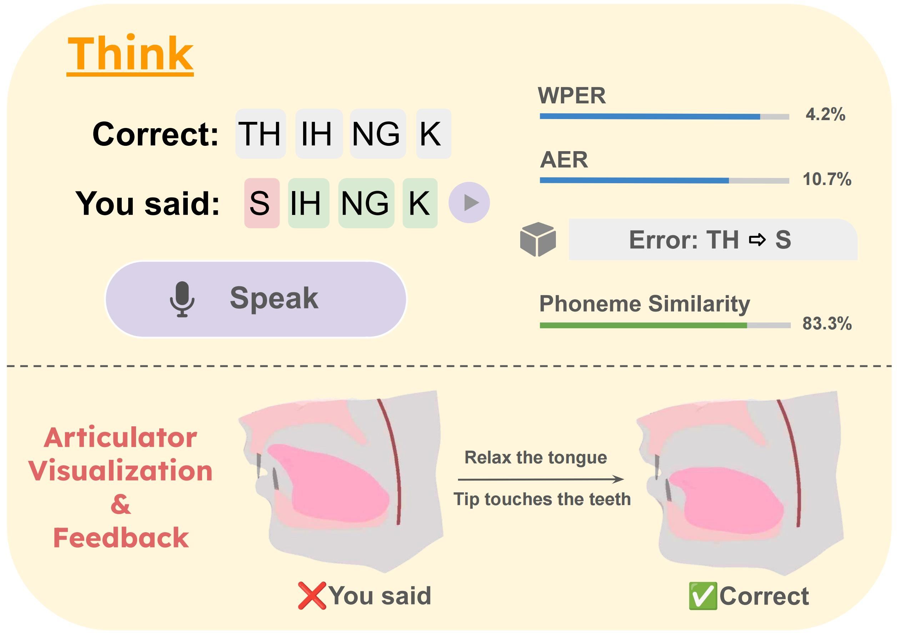
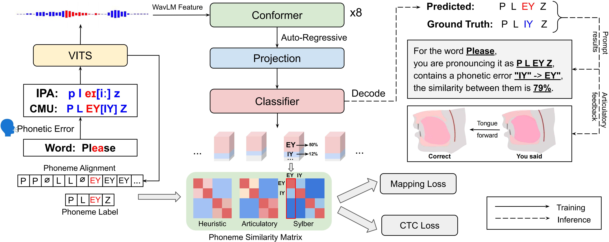

Model transcribes user speech into phoneme sequences, detects errors, scores using metrics, and generates articulator visualizations and feedback: relax the tongue and place it against the roof of the mouth, with the tip lightly touching the teeth.
Phonetic error detection, as a core subtask of automatic pronunciation assessment, aims to identify pronunciation deviations at the fine-grained phoneme level. However, variability in both speech production and perception, including accents, and dysfluencies, presents a significant challenge for phoneme recognition. Current models are unable to capture these discrepancies effectively. In this work, we propose a framework for verbatim phoneme recognition, employing multi-task training with a novel phoneme similarity modeling. Unlike most previous studies that focus on transcribing what the person is supposed to say, our method aims to transcribe what the person actually said. We develop a simulated dataset VCTK-accent contains phonetic errors, which is open-sourced, and propose two novel metrics for assessing pronunciation differences. Our work provides a new benchmark for the phonetic error detection task.

Pipeline of phoneme recognition and error detection: phonetic error of "IY" -> "EY" with a similarity score 79\% in the word "Please", and the articulatory feedback is moving the tongue towards the front of the mouth.